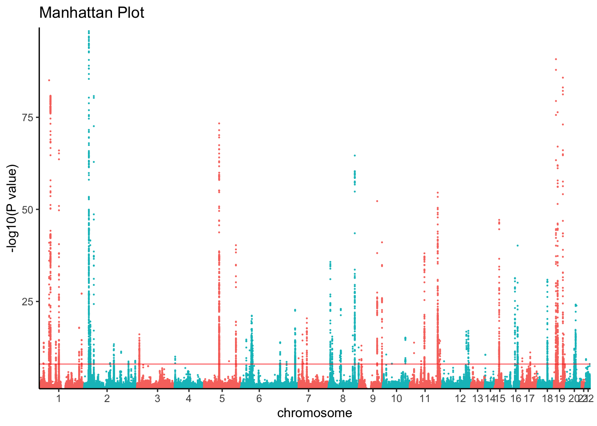
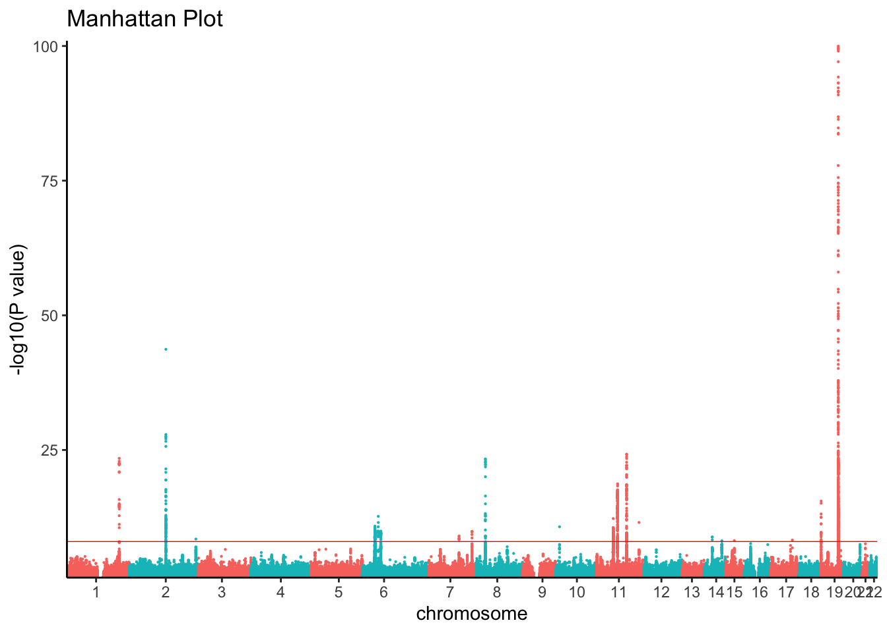

A GWAS of low-density lipoprotein (LDL) cholesterol, high-density lipoprotein (HDL) cholesterol, triglycerides and total cholesterol levels conducted in 188,577 individuals that identified 157 loci were associated with lipid levels.
Willer, C. J. et al. Discovery and refinement of loci associated with lipid levels. Nat Genet 45, 1274–83 (2013).
tc_path ="resources/Willer2013tc.chrall.CPRA_b37.tsv.gz"tc_ss <-read_tsv(tc_path, comment ="##", col_types = coltypes, col_select =c(DBSNP_ID, CHROM, POS, REF, ALT, AF, BETA, SE, Z, P, N, TRAIT))# Filter on p < 0.5 to reduce computeggman(filter(tc_ss, P <0.05& P >1e-100), snp ="DBSNP_ID", bp ="POS", chrom ="CHROM", pvalue ="P", relative.positions =TRUE) +theme_classic()

Alzheimer’s disease
A GWAS of Alzheimer’s disease conducted in 94,437 indivudles by the International Genomics Alzheiemr’s Project that Identified 20 genome-wide significant loci.
Kunkle, B. W. et al. Genetic meta-analysis of diagnosed Alzheimer’s disease identifies new risk loci and implicates Aβ, tau, immunity and lipid processing. Nat Genet 51, 414–430 (2019).
AD_path ="resources/Kunkle2019load_stage123.chrall.CPRA_b37.tsv.gz"AD_ss <-read_tsv(AD_path, comment ="##", col_types = coltypes, col_select =c(DBSNP_ID, CHROM, POS, REF, ALT, AF, BETA, SE, Z, P, N, TRAIT))# Filter on p < 0.5 to reduce computeggman(filter(AD_ss, P <0.05& P >1e-100), snp ="DBSNP_ID", bp ="POS", chrom ="CHROM", pvalue ="P", relative.positions =TRUE) +theme_classic()

SumStat Standardization
GWAS summary statistics were standardized using a Snakemake Workflow that (1) aligns effect alleles to the alternate allele on the forward strand of the human genome reference build and normalizes indels, (2) annotates variants with marker names using chromosome:position:ref:alt, 1000 Genomes rsIDs (phase III), and database-single-nucleotide polymorphism (dbSNP) rsIDs (b151) (3) where allele frequencies are missing, annotates allele frequencies using non-Finnish Europeans from gnomAD (version 2.1), and (4) convert summary statistics to VCF and TSV files.
Andrews, S. J. et al. Causal Associations Between Modifiable Risk Factors and the Alzheimer’s Phenome. Ann Neurol 89, 54–65 (2021).